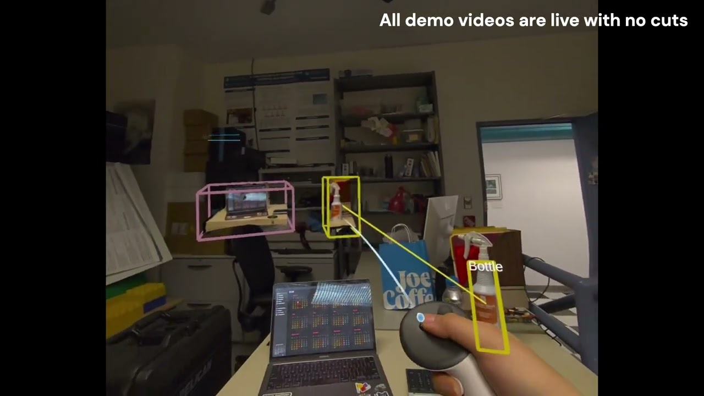

IEEE VR 2026 · Research Demo · 2026
Fast Digitization in XR of Reality-Linked Gaussian-Splatted Proxies
Best Research Demo, Honorable Mention

Abstract
Capturing real objects as interactive 3D assets in XR typically requires offline photogrammetry. We present Gaussian-Splatted Proxies, a system for fast object digitization in XR using feed-forward 3D Gaussian splatting. With a Quest 3 headset, users select objects detected by the system through the passthrough cameras, then capture images that an edge server reconstructs as interactive Gausasian splats. Our system extracts individual objects from scene reconstructions without any per-scene training by projecting detection bounding boxes into 3D space. The resulting assets can be grabbed, inspected, rotated, and used to select the corresponding objects in the physical world. https://youtu.be/orx3gFPBNpA
BibTeX
@inproceedings{yang2026fastdigitization,
title={Fast Digitization in XR of Reality-Linked Gaussian-Splatted Proxies},
author={Yang, Ben and Liu, Shanying and Natarajan, Kirthana and Feiner, Steven},
booktitle={2026 IEEE Conference on Virtual Reality and 3D User Interfaces Abstracts and Workshops (VRW)},
year={2026},
doi={10.1109/VRW70859.2026.00389}
}